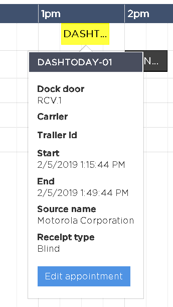
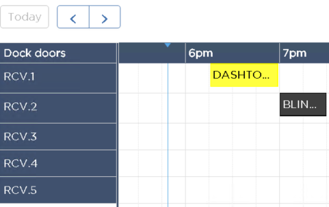

Appointment Calendar Events SQL – Modify exit point allows the user to customize the fields displayed on the Appointment Calendar screen popover and set custom colors for appointments displayed on the calendar per dock door. In the SCALE configuration, this exit point can be found under Exit Point Controls -> General-> Appointment Calendar Events SQL - Modify.
This exit point receives following two input parameters.
- @SESSIONVALUE – Session(xml)
- @SQL - Base SQL query which is used to fetch and display appointments
This exit point has an output parameter i.e. @RETURNVALUE. It returns the customized SQL query which overrides the base SQL query to fetch and display appointments. The base SQL query looks as shown below
| Base SQL query |
Copy Code
|
SELECT
NULL as backgroundColor, NULL as textColor, AP.OBJECT_ID as ObjectId, AP.DOCK as Dock, AP.APPT_DATE_TIME as ApptDateTime, AP.END_DATE_TIME as EndDateTime, RH.INTERNAL_RECEIPT_NUM as InternalReceiptNum, RH.RECEIPT_ID as ReceiptId, RH.TRAILER_ID as TrailerId, RH.CARRIER as Carrier
FROM
APPOINTMENT_SCHEDULE AP JOIN RECEIPT_HEADER RH ON AP.INTERNAL_RECEIPT_NUM = RH.INTERNAL_RECEIPT_NUM
WHERE
RH.WAREHOUSE = @WAREHOUSE AND (AP.APPT_DATE_TIME BETWEEN @apptstartDateTime AND @apptendDateTime OR AP.END_DATE_TIME BETWEEN @apptstartDateTime AND @apptendDateTime)
|
How to customize the calendar screen popover fields
1) Add the list of columns that needs to be shown on the appointment calendar screen popover to the custom SQL select statement in addition to the base columns. Example below shows adding two custom columns i.e. ReceiptType and SourceName to custom SQL statement in addition to base columns.
| Custom SQL query |
Copy Code
|
SELECT
NULL as backgroundColor, NULL as textColor, AP.OBJECT_ID as ObjectId, AP.DOCK as Dock, AP.APPT_DATE_TIME as ApptDateTime, AP.END_DATE_TIME as EndDateTime, RH.INTERNAL_RECEIPT_NUM as InternalReceiptNum, RH.RECEIPT_ID as ReceiptId, RH.TRAILER_ID as TrailerId, RH.CARRIER as Carrier, RH.RECEIPT_TYPE as ReceiptType, RH.SOURCE_NAME as SourceName
FROM
APPOINTMENT_SCHEDULE AP JOIN RECEIPT_HEADER RH ON AP.INTERNAL_RECEIPT_NUM = RH.INTERNAL_RECEIPT_NUM
WHERE
RH.WAREHOUSE = @WAREHOUSE AND (AP.APPT_DATE_TIME BETWEEN @apptstartDateTime AND @apptendDateTime OR AP.END_DATE_TIME BETWEEN @apptstartDateTime AND @apptendDateTime)
|
2) Add the list of fields to appointment calendar screen metadata with corresponding resource keys. Example below shows adding two custom fields i.e. ReceiptType and SourceName to 'eventDetailFields' screen control attribute of appointment calendar screen metadata.
| Appointment Calendar Screen metadata |
Copy Code
|
exec DBC_ISCREENCONTROLATTRIBUTES
@active = 'Y' ,
@attributeName = 'eventDetailFields',
@attributeValue = 'DOCKDOOR:Dock|CARRIER:Carrier|TRAILERID:TrailerId|START:ApptDateTime|END:EndDateTime|SOURCENAME:SourceName|RECEIPTTYPE:ReceiptType',
@isControlProperty = 'Y' ,
@processStamp = 'dbChangeAppointmentSchedule_Transaction.sql',
@screenControlId = @screenControlId
|
3) Popover screen with new custom fields looks as shown below.

How to customize the colors for appointments displayed on calendar
1) Modify the base SQL query as shown below to customize the colors for appointments per dock door. Example below shows setting custom appointment colors to two receiving dock doors i.e. RCV.1 and RCV.2.
| Custom SQL query |
Copy Code
|
-- Define an temporary variable to store custom colors per dock door
DECLARE @EventColorsPerDockLocation TABLE
(
DockLocation nvarchar(25),
BackgroundColor nvarchar(50),
TextColor nvarchar(50)
);
-- Set the background and text color for dock door that require custom colors
-- You can use any of the CSS color formats such #f00, #ff0000, rgb(255,0,0), or red.
INSERT INTO @EventColorsPerDockLocation VALUES('RCV.1', 'yellow', 'black');
INSERT INTO @EventColorsPerDockLocation VALUES('RCV.2', '#000000', '#ffffff');
-- Join the above table variable with APPOINTMENT_SCHEDULE table and select the backgroundColor, textColor and borderColor column values
SELECT
BackgroundColor as backgroundColor, TextColor as textColor, BackgroundColor as borderColor, AP.OBJECT_ID as ObjectId, AP.DOCK as Dock, AP.APPT_DATE_TIME as ApptDateTime, AP.END_DATE_TIME as EndDateTime, RH.INTERNAL_RECEIPT_NUM as InternalReceiptNum, RH.RECEIPT_ID as ReceiptId, RH.TRAILER_ID as TrailerId, RH.CARRIER as Carrier
FROM
APPOINTMENT_SCHEDULE AP JOIN RECEIPT_HEADER RH ON AP.INTERNAL_RECEIPT_NUM = RH.INTERNAL_RECEIPT_NUM
LEFT OUTER JOIN @EventColorsPerDockLocation ON AP.Dock = DockLocation
WHERE
RH.WAREHOUSE = @WAREHOUSE AND (AP.APPT_DATE_TIME BETWEEN @apptstartDateTime AND @apptendDateTime OR AP.END_DATE_TIME BETWEEN @apptstartDateTime AND @apptendDateTime)
|
2) Appointment calendar screen with customized appointment colors looks as shown below.

See Also